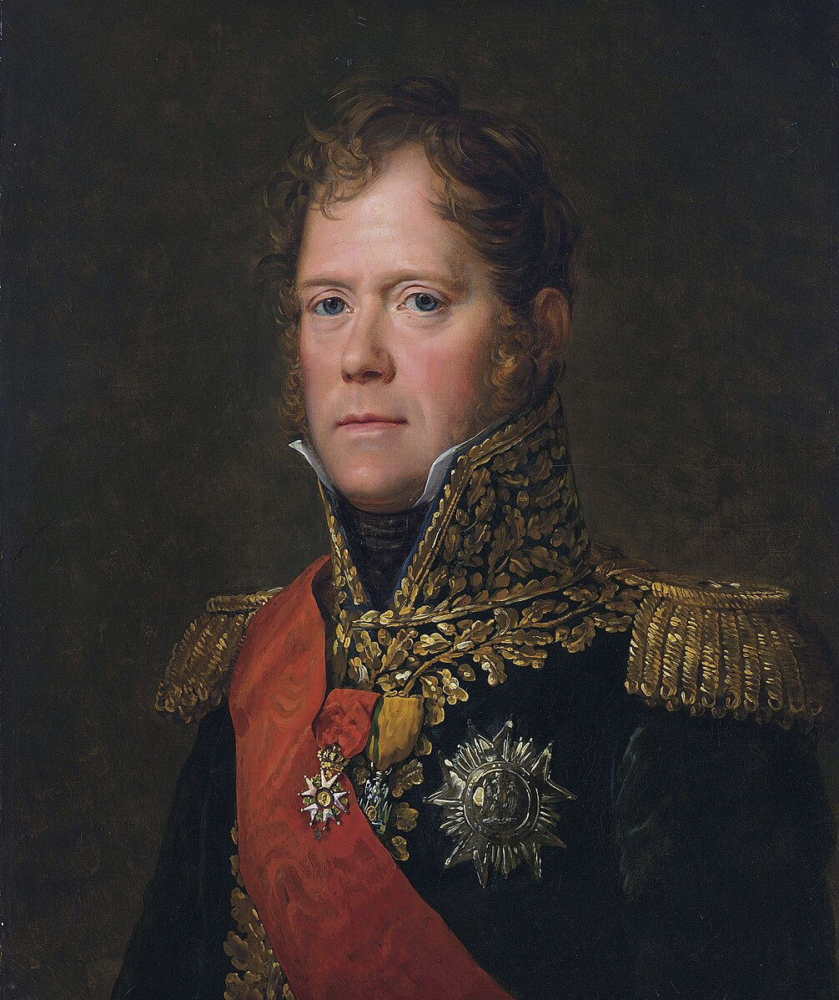

Napoleonovi maršálové
Francouzské revoluční války a Napoleonské války patří mezi nejvýznamější konflikty v dějinách lidstva, které jako jiné války přinesli spoustu utrpení, ztrát a destrukce. Avšak narozdíl od jiných jsou plné příběhy o odvaze, statečnosti, hrdinství, genialitě, tvrdohlavém vzdoru, ale také o zdradách, korupci a zbabělosti. A dnes vám povím o pěti takových příbězích, příbězích maršálů, kteří byli Napoleonovi obrovskou podporou, a bez kterých by se Napoleon pravděpodobně tak daleko nikdy nedostal. Tyto maršáli jsem vybral jakožto dle mého názoru pět nejlepších, začínám nejhorším, končím nejlepším z těchto pěti.
Ney / Masséna / Lannes / Suchet / Davout
Ney

Michel Ney se narodil roku 1769 do rodiny chudého bednáře. Roku 1788 se přidal do husarského
pluku, kde se vyznamenal během Velké francouzské revoluce. Podle obličeje mu jeho kolegové
začali říkat "Rudý Ney" a během pár let se vypracoval z poddůstojníka přes kapitána
až roku 1796 na brigádního generála. Následně sloužil pod Massénou a Moreauem, kde se
vyznamenal v bitvě u Hohenlindenu, díky čemuž mu Napoleon roku 1804 udělil titul maršála.
Další rok dostal Ney pod velení 6. sbor s nímž se mu podařilo odříznout ústup Rakouského
generála Macka v bitvě u Elchingenu, za což dostal od Napoleona titul kníže z Elchingenu.
Neyův sbor promeškal bitvu u Slavkova, ale následující rok se zúčastnil bitvy u Jeny, kde
neuposlechl rozkaz Napoleona a vrhl se vpřed, čímž se dostal do obklíčení, ze kterého byl
nakonec osvobozen, avšak rozzuřený Napoleon na to regoval slovy: "Ney toho ví o boji méně
jak ten bubeník, který se připojil jako poslední". Následující rok 1807 opět zklamal
Napoleona tím, že nechal uniknout pruskou armádu, která se připojila k té ruské v bitvě
u Jílového. Avšak toho léta se konečně opět vyznamenal v bitvě u Friedlandu, kde rozdrtil
ruské pravé křídlo, čímž spustil ruský útěk z bojiště. Napoleon, když viděl postup jeho
sboru tak na to reagoval: Ten muž je Lev! Roku 1812 se přidal k Napoleonově tažení do Ruska.
V bitvě u Borodina naléhal na císaře, aby poslal svou elitní gardu do boje, ten však odmítl
za což se Ney na Napoleona naštval a přestal mu pomalu důvěřovat. Následoval Napoleonův
nechvalně známý ústup z Moskvy, který však byl pro Neye jeho největší hodinou. Po těžké
porážce Davoutova sboru u Vjazmy Ney zachránil alepoň zbytky jeho sboru a Neyův sbor nyní
tvořil zadní voj celé Napoleonovi armády a držel nepřátele na uzdě jak dlouho to jen šlo.
Ale u Krasného byla jeho cesta zablokována nepřítelem, který ho vyzval ke kapitulaci.
Ney se však nevzdal a rozhodl se pro extrémně náročný ústup přes Dněpr. Proti všem
předpokladům zamrzlý Dněpr přešel, sám vytahoval vojáky kteří se propadli ledem.
Vyburcoval své muže k nekonečnému pochodu. Když byli napadeni kozáky, Neyův sbor utvořil
čtverec a jejich útok odrazil a nakonec se probojoval ke zbytku armády. Nikdo nemohl
uvěřit, že vrátili živí, sám Napoleon poznamenal: "Jaký to voják! Armáda je plná statečných
mužů, ale Michel Ney je opravdu nejstatečnější z nejstatečnějších." Podle legendy
byl Ney poslední Francouz, který opustil Rusko. Za jeho neskutečný výkon mu Napoleon udělil
titul princ Moskevský. Následující rok se ukázali jeho limity jako velitele, když utrpěl
drtivou porážku v bitvě u Dennewitz. Po porážce Napoleona u Lipska a obsazená Paříže
koaličními vojsky byl jedním z maršálů, kteří přiměli Napoleona k abdikaci.
Když se Napoleon vrátil z Elby rozhodl se Ney i přes jeho počáteční odpor k němu
opět připojit, ale po konečné porážce u Waterloo byl zatčen a představen před soud,
který z něho chtěl udělat exemplární příklad za spolupráci s Napoleonem trestem smrti.
7. prosince 1815 byl postaven před popravčí četu, ke které vzkázal svá poslední slova:
"Vojáci až vám dám pokyn k palbě, palte na srdce. Počkejte na rozkaz, bude to můj poslední.
Nesouhlasím se svým rozsudkem... ...Bojoval sto bitev pro Francii a ani jednu proti ní...

Masséna
.jpg)
André Masséna se narodil v Nice, který byl v té době součástí království Sardinie-Piedmonnt.
V 17 letech se přidal k francouzské armádě, kterou po 14 letech opustil. Po začátku revoluce
se do armády opět vrátil, kde byl zvolen velitelem praporu. I přes to, že neměl žádné
vojenské vzdělání byl zručný a vychvalovaný velitel, za což se mu dostalo rychlého povýšení
a roku byl 1793 se stal divizním generálem. Roku 1795 vybojoval významné vítězství v bitvě
u Loana. Následující rok se stal Napoleónovým podřízeným v italském tažení, kde svojí
aktivitou, neúnavností a talentem vybojoval nespočet výher, čímž Napoleonovi získal
úspěch a slávu, Napoleon ho označil jako "rozmazlené dítě vítězství". Roku 1799 byla
Francie ohrožena dvěmi koaličními armádami, dřív než však mohli spojit, Masséna první
porazil jeho neslavnějším vitězstvím v bitvě u Curychu. Druhá koaliční armáda se ocitla
sama a musela ustoupit, čímž Masséna zachránil Francii. Následující rok vedl heroickou
obranu Janova, díky které Napoleon vyhrál jeho slavné vítězství u Marenga. V té době
již však začal stárnout a byl obviněn z korupce, kvůli čemuž odešel do polopenze.
Po jeho jmenování Maršálem vedl roku 1805 další tažení Itálii, během níý obsadil Neapol.
Roku 1807 při lovu ho Napoleon omylem zasáhl, kvůli čemuž Masséna ztratil jedno oko.
Dva roky později při dalším tažení proti Rakousku se Masséna opět vyznamenal, když
v bitvě u Aspern zorganizoval spořádaný ústup. Napoleon mu za to udělil titul kníže
z Esslingu. Následující rok vedl již vyčerpaný a nemocný invazi do Portugalska, která
se ukázala katastrofální a kvůli Wellingtonově taktice spálené země ztratil polovinu
armády. Za tento neúspěch byl odvolán a již nikdy se nevrátil do služby a při setkání
s Napoleonem byl přivítán řezavými slovy: "Takže princi z Esslingu ty již nejsi Masséna?"
Zemřel na následky jeho nemoci roku 1817.

Lannes
_-_Le_maréchal_Lannes_(1769-1809),_1834.jpg)
Jean Lannes byl synem farmáře. Původně se chtěl stát barvířským učedníkem, ale když
vypukla francouzská revoluce, narukoval roku 1792 do armády. Díky své energii
a charismatu se hned stal důstojníkem. Ze začátku bojoval na jihu se španěly, kde získal
slávu v bitvě u Boulou. Následně byl jako plukovník převelen na italskou frontu, kde
získal chválu nejprv od Massény a následně od samotného Napoleona v bitvách u Dega
a Lodi, kde se vrhl pod palbou jako první kupředu přes most. Následně u Arcole byl
zraněn, avšak když zjistil, že francouzi ustupují, zahájil protiútok, čímž pravděpodobně
zachránil Napoleona od zajetí nebo možná i smrti. Po této bitvě se Lannes stal jedním
z nejbližších Napoleonových přátel. Následně pomáhal Napoleonovi v Egyptě, kde byl
při kde byl při obléhání Akonu zraněn a jen tak tak zachráněn svými muži. Další rok
tvořil předvoj Napoleonovi armády v Itálii, avšak u města, Montebello narazil na
nepřítele s dvojnásbnou početní převahou, který navíc narozdíl od Lanna měl jízdu
a dělostřelectvo, i přes to se však Lannovi podařilo nepřítele porazit. Za což se stal
knížetem z Montebello Následně sehrál důležitou roli v bitvě u Marenga, kde zdržoval
Rakušany do příchodu posil. Po jmenování maršálem opět pomáhal císaři u Ulmu,
Slavkova, Jeny, Pułtusku a Friedlandu. Dále bojoval ve Španělsku v bitvě u Tudely
a obléhání Zaragózy. Lannes byl otřesen surovostí bojů, napsal císaři: "Pane, tohle je
děsivá válka". Při tažení proti Rakousku 1809 bojoval u Eggmühlu a Řezna, si sám
vezme kde, když nikdo nechtěl jít do útoku, hrozil, že žebřík a vrhne se na hradby,
díky čemuž bylo Řezno dobyto. Dále se zúčastnil bitvy u Aspern, kde když už se
Francouzi stahovali,byl zasažen dělovou koulí. Lannovi byla amputována noha,
ale i přes to dostal infekci a o týden později zemřel. Napoleon plakal, když se to
dozvěděl: "Jaká to ztráta pro Francii... ...a pro mě".

Suchet
.jpg)
Louis-Gabriel Suchet se narodil do rodiny obchodníka s hedvábím. Roku 1793 se přidal
k revoluční armádě. Pomáhal při obhléhání Toulonu, rkde se seznámil s Napoleonem.
Dále sloužil 1796 v Itálii, kde zjistil, že pro disciplínu a efektivitu vojáků je klíčové
zajistit plat, oblečení a jídlo. Následně sloužil jako náčelnník štábu u generálů Bruna,
Massény a Jouberta, který zemřel v jeho náručík v bitvě u Novi. Roku 1800 byl povýšen
na divizního generála a bojoval s Massénou u Janova, kde byl zprvu nucen ustoupit do
Francie, následně však rozdrtil Rakušany u Nice. Suchet se i přes jeho výkon, nikdy
nedostal do užšího kruhu Napoleona, navíc se nestal roku 1804 maršálem a byl více méně
degradován. Nicméně dále sloužil u Slavkova, Jeny a Pułtusku. Po vypuknutí poloostrovní
války ve Španělsku, byl sem roku 1808 převelen. Zde nejprve pomáhal při obléhání
Zaragozy a stal se na doporučení maršála Lanna guvernérem Aragonie. Dostal pod velení
3. sbor. Suchet byl nejprve poražen u Alcaňiz, ale následně se pomstil následně se pomstil
a Belchite. Krom toho také zde však čelil partyzánům. Aby byl chopen obstát snažil si
získat civilní obyvatelstvo respektováním církve, zákazem rabování jeho vojáky a ochranou
před partizány, čímž udělal z Aragonie nejbezpečnější místo ve Španělsku. Také se mu
podařilo rozšířit francouzskou kontrolu obsazením Leridy, Mequinenzy, Tortosy, Tarragony
a Valencie, za což mu Napoleon konečně udělal jeho maršálskou hůl a udělal ho knížetem
z Albufery. Avšak po porážce Francouzů na západě Španělska byl nucen se stáhnout
k francouzské hranici, kterou držel do Napoleonovi abdikace. Po návratu Napoleona
byl pověřen držením hranic na jihvýchodě Francie, což se mu podařilo do konce války.
Po návratu Bourbonů se vrátil na své panství, kde zemřel roku 1826. Kupodivu katedrále
v Aragonii byl chován v takové úctě, že se v Zaragozské modlili k jeho duši, což bylo
na francouzského maršála ve Španělsku zcela neslýchané. Když se novinář na Svaté Heleně
zeptal Napoleóna, kdo byl jeho nejlepší generál odpověděl mu: "Těžko říct, ale asi bych řekl,
že Suchet".

Davout

Louis-Nicholas Davout se narodil do nižší šlechtické rodiny a roku 1788 se přidal
k jízdnímu pluku. Po začaátku francouzské revoluce bojoval proti Rakušanům, kde
získal chválu tím, že se pokusil zabránit svému nadřízenému důstojníkovi Dumouriez
k přeběhnutí, i když neuspěl, ale byl povýšen na brigádního generála. Poté byl však na dva
roky vyloučen z armády, kvůli jeho šlechtickému původu. Následně se stal podřízeným
a blízkým přítelem generála Desaixe, který byl zároveň přítelem Napoleona. Na doporučení
Desaixe se Davout přidal k Napoleonovi v tažení do Egypta, kde s Desaixem vedl úspěšnou
expedici na jih. Po smrti Desaixe v bitvě u Marenga se stal roku 1804 maršálem a dostal
pod velení 3. sbor, u kterého si prosazoval tvrdou disciplínu a výcvik, ale zároveň se také
snažil dbát na blaho svých vojáků. Během bitvy u Slavkova velel klíčovému pravému křídlu,
kde držel Rakušany, dokud jim do zad nepřišel Napoleon. Následující rok se zúčastnil tažení
proti Prusku, kde u Auerstadtu se jeho sbor sám postavil proti hlavní Pruské armádě, která
ho přečíslovala víc jak dva ku jedné. Davout nejprve zadržel nepřátelský útok a po následné
reorganizaci a stabilizaci zahájil protiútok, čímž zahral Prusy na útěk. Napoleon
zpočátku zprávě o Davoutově vítězství nevěřil, následně na něj lpěl chválu: "Řekněte
maršálovi, že on, jeho generálové a jeho vojáci si získali můj věčný vděk." Napoleon také
dal 3. sboru tu čest, být prvními vojáky, kteří vstoupí do Berlína a Davout se stal vévodou
z Auerstadtu. Další rok u Jílového hrál Davout klíčovou roli, když krok za krokem
roloval ruské pravé křídlo, i když se mu nepodařilo nepřítele zničit, kvůli pozdnímu
příchodu maršále Neye. V bitvě své vojáky burcoval slovy: "Zbabělci zemřou na Sibiři,
stateční padnou na čestném poli." Po mírové smlouvě u Tilsitu se Davout stal generálním
guvernérem Varšavského vévodství, kde dohlížel na výcvik jednotek. Davout nebyl
příliš oblíbeným generálem, kvůli jeho tvrdému přístupu ho jeho vojáci víc respektovali
než milovali. Dále Davout bojoval u Eggmühlu a Wagramu, za což dostal titul kníže
z Eggmühlu. 1812 byl pověřen organizací Grande armeé pro invazi Ruska, sám dostal
pod velení 3. sbor. V Rusku vyhrál další velké vítězství v bitvě u Saltanovky, nepřítel
byl však schopen uniknout. Začali se projevovat spory mezi ním dalími maršály, kteří si
přáli, aby selhal. V bitvě u Borodina Davout navrhl obejít ruské pravé kříslo přes les,
což Napoleon odmítl a místo toho zahájil frontální útok, což způsobilo zbytečně velké ztráty.
Při ústupu z Moskvy utrpěl Davoutův sbor těžkou porážku u Vjazmy. Většinu bojů
v Německu 1813 Davout promeškal, protože byl poslán na sever chránit Hamburk. I přes to,
že byl schopen ho udržet do Napoleonovi abdikace, spousta historiků to do dnes vidí
jako plýtvání Napoleona jeho jeho nejlepším maršálem. Po návratu Napoleona byli
Davoutovi schopnosti opět vyplýtvány, tím že ho Napoleon pověřil obranou Paříže.
Co kdyby ne Grouchy, ale Davout velel pravému křídlu u Waterloo? Historie, by
pravděpodobně vypadala zásadně jinak. I přes to že byl Davout nejmladším maršálem ukázal
se jako ze všech nejlepší. Jeho slabinou bylo jeho slabé charisma a neomalené způsoby,
kvůli kterým měl málo přátel a spousta jeho kolegů si dokonce přála, aby selhal, což od něj
viděli jen velmi vzácně. Pro jeho tvrdý přístup se pro něj vžila přezdívka "železný maršál".

Zdroje:
Autorství:
odkaz na licenci a zdroj obrázku
(autor tohoto článku dokreslil oranžovou barvou do mapy bitvy)
Ney portrét – public domain, autor- François Gérard (188 let po smrti)
Masséna portrét – public domain, autor- Flavie Renault (190 let po smrti)
Lannes portrét – public domain, autor-Julie Volpelière (183 let po smrti)
Suchet portrét – public domain, autor-Adèle Gault (100+ let po smrti)
Davout portrét – public domain, autor- Pierre-Claude Gautherot (200 let po smrti)